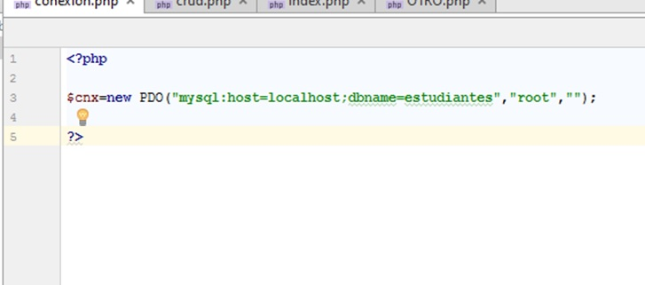

Vamos a crear una conexión a nuestra base de datos, desde un archivo PHP, lo podemos realizar desde cualquier editor de código con las siguientes líneas: $conexion=new PDO("mysql:host=localhost;dbname=estudiantes ","root",""); Explicación $conexion: Es nuestra variable de conexión a nuestra base de datos. new= PDO: Es nuestra instancia de interfaz para acceder a nuestra base de datos mysql: host=localhost: indicamos nuestro servidor en este caso es un servidor local dbname=estudiantes: indicamos el nombre de nuestra base de datos root: es el usuario por defecto de phpmyadmin “ ”: contraseña de acceso, este ejemplo la contraseña es vacío ya que es por defecto del phpmyadmin
